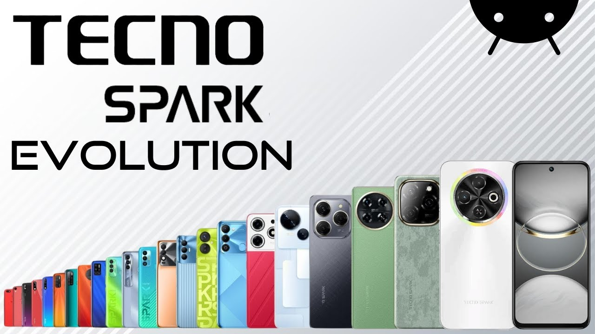
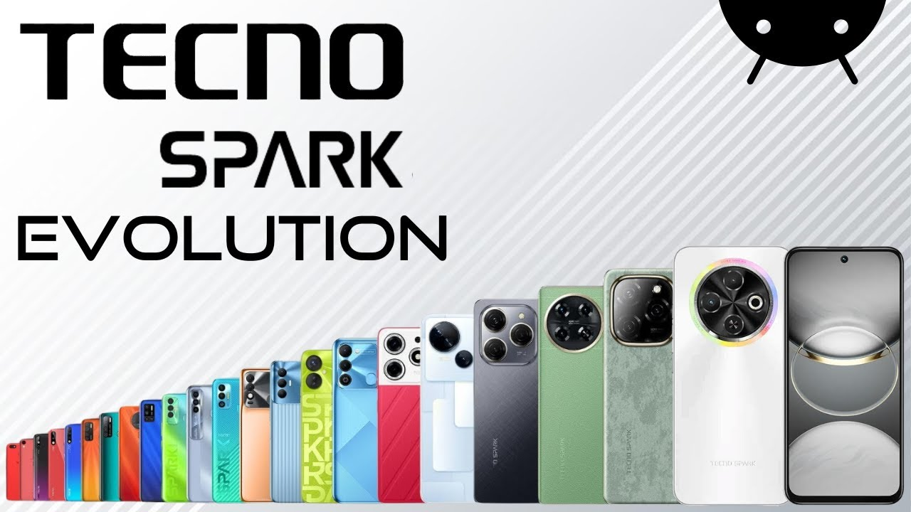
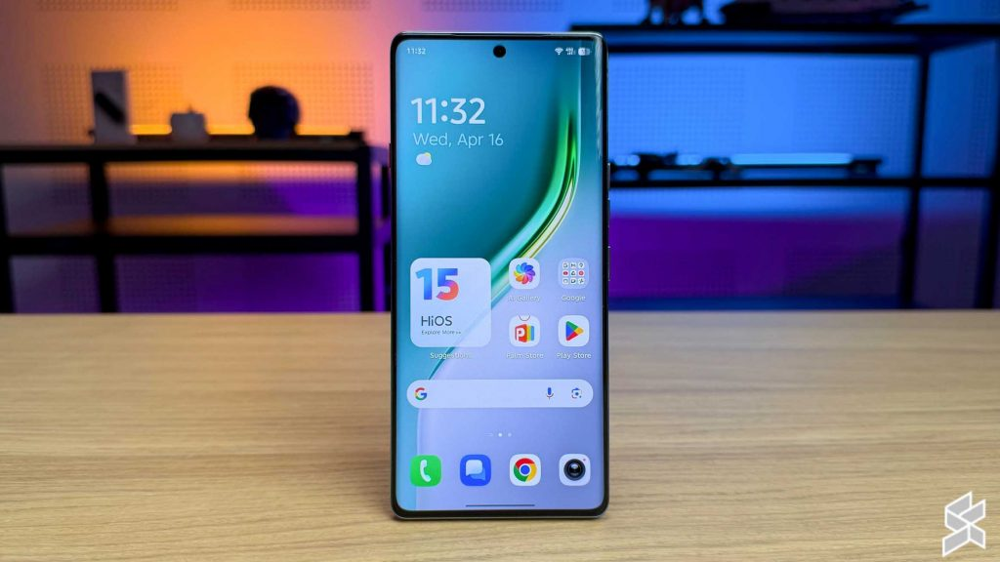
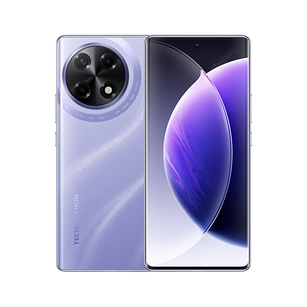
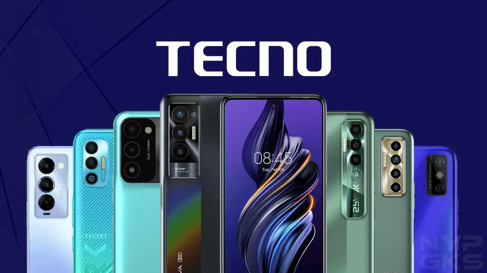

Our History
TechCon began in 2010 as a grassroots meetup and has since evolved into a global tech.
TechCon began in 2010 as a grassroots meetup and has since evolved into a global tech.
TechCon aims to inspire, educate, and empower the global tech community.
We have hosted tech pioneers, and AI visionaries who have shaped the modern digital landscape.
Jane Doe – A leading figure in real-time neural networks and deep learning systems.
John Smith – Prominent advocate of digital safety and ethical hacking practices.
Explore the latest innovations from smartphone makers like Tecno Camon, featured at TechCon 2024.
Tecno Camon 40 Pro: Premium design and high-performance camera system.
Tecno Camon 305: Colorful, user-centric mid-range smartphone.
Tecno Camon 19 Neo: Budget-friendly option with great performance.
Innjoo GT20 Pro: Flagship alternative showcasing advanced mobile technology.